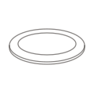

Dans vos bureaux
Il suffit d’une salle avec une grande table, des chaises et un point d’eau à proximité. Marie apporte la terre et les outils.
Entreprises et structures
J’interviens dans des structures diverses pour proposer des ateliers poterie (entreprises, établissements médico-éducatifs, centres culturels, hôtels, et même en boîte de nuit). Ma ligne directrice est toujours la même : créer une bulle créative pendant laquelle on déconnecte le cerveau et on connecte à la terre pour créer de ses mains.
En fonction des structures et des publics j’adapte mes objectifs : faire une pause au milieu d’une journée de travail, développer sa mobilité fine, stimuler le sens tactile avec la terre, tester de nouvelles activités créatives. Ou encore faire une pause entre le bar et le dancefloor…
Vous êtes une structure et vous souhaitez organiser un atelier dans vos locaux ? On en discute ensemble pour créer une expérience qui vous ressemble.
Les formules
Il suffit d’une salle avec une grande table, des chaises et un point d’eau à proximité. Marie apporte la terre et les outils.

Pour clore une journée de travail ou ponctuer un séminaire, Marie peut s’installer sur le lieu que vous avez choisi, s’il n’est pas trop loin : la distance est à confirmer avec elle au moment du devis.
Comment ça se passe
Une date ou une période, le nombre de participants et le lieu : Marie vous répond avec une proposition.
Elle arrive avant l’équipe avec la terre et les outils.
Marie montre chaque geste et accompagne chacun. Personne n’a besoin d’avoir déjà touché de la terre.
Marie emporte les pièces pour le séchage et la cuisson. Elles sont prêtes environ 6 semaines plus tard.
 Photo à venir
Photo à venir
Pourquoi la céramique
Questions fréquentes
Marie vous envoie un devis adapté à votre demande. [tarif indicatif à compléter : prix par personne ou par groupe, minimum, frais de déplacement éventuels]
De 5 à 20 personnes par atelier.
Dans Paris et en banlieue, mais pas partout : selon la ville, le déplacement est à voir avec Marie au moment du devis.
Une salle avec une grande table, des chaises et un point d’eau à proximité. Marie apporte tout le reste.
Non. L’atelier est pensé pour des personnes qui n’ont jamais travaillé la terre. Marie montre chaque geste et aide chacun à finir sa pièce.
Oui. Ce n’est pas de l’argile qui sèche à l’air : Marie cuit les pièces au four, ce qui les rend solides et durables.
Environ 6 semaines après l’atelier, le temps du séchage et de la cuisson. Marie les livre ensuite à votre bureau, elle-même ou par colis.
[à compléter : facture au nom de l’entreprise ou du CSE, acompte éventuel, délai de paiement, assurance responsabilité civile professionnelle]
Demander un devis
Écrivez à Marie en indiquant :